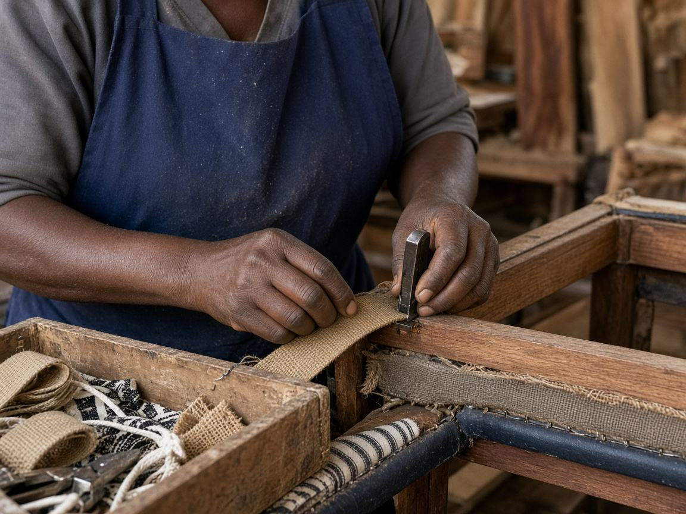

Covers & finishing
Zippers & sliders
Nylon zipper chain and compatible sliders for removable cushion covers, mattresses, bags and heavier upholstery work.
- No. 5 zipper
- No. 7 zipper
- No. 8 sliders
- No. 10 zipper
- Two-pull sliders